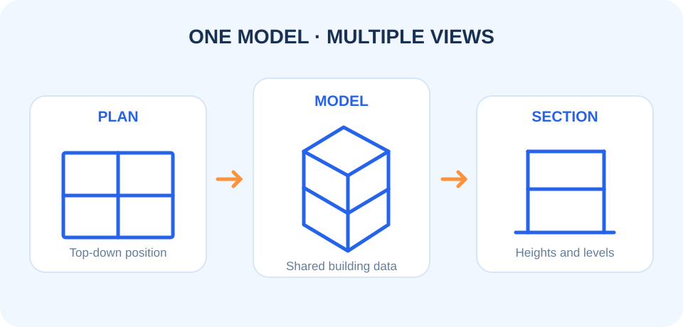

งานประสานแบบ · 9 ตุลาคม 2569
เริ่มต้นประสานโมเดล Revit: ก่อนส่งแบบควรตรวจอะไรบ้าง
การประสานโมเดลที่ดีเริ่มจากข้อมูลชุดเดียวกัน ก่อนเปิด Clash Detection ให้ทีมตรวจ 5 จุดนี้เพื่อให้การประชุมแก้ปัญหาได้ตรงประเด็น

1. ใช้ Project Base Point และระดับอ้างอิงเดียวกัน
ตรวจให้ทุกไฟล์เชื่อมต่อกันด้วยพิกัดเดียวกัน ระดับชั้นและชื่อ Level ต้องเข้าใจตรงกัน เพราะจุดคลาดเคลื่อนเพียงเล็กน้อยทำให้แบบซ้อนกันผิดตำแหน่งได้ทั้งโครงการ
2. จัดชื่อ View และ Workset ให้ค้นหาได้ง่าย
สร้างมุมมองสำหรับตรวจงานโดยเฉพาะ เช่น COOR-ARC, COOR-STR และ COOR-MEP พร้อมใช้ View Template เดียวกัน ทีมจึงเห็นข้อมูลชุดเดียวกันระหว่างประชุม
3. ตรวจช่องเปิดและพื้นที่สงวนงานระบบ
ก่อนตรวจจุดชน ให้สถาปัตย์และโครงสร้างยืนยันขนาดช่องเปิด พื้นที่ฝ้า และระดับคาน งานระบบจะวางแนวท่อและรางสายได้โดยไม่ต้องแก้ซ้ำ
4. แยกประเด็นตามผู้รับผิดชอบ
บันทึกประเด็นด้วยรหัส ขอบเขต ภาพประกอบ และกำหนดวันตอบกลับ วิธีนี้เปลี่ยนรายการ Clash จำนวนมากให้กลายเป็นงานที่ติดตามได้จริง
5. สรุปผลก่อนออกรอบถัดไป
เมื่อแก้ไขแล้ว ให้ Publish โมเดล เวอร์ชันใหม่ และตรวจประเด็นเดิมอีกครั้งก่อนปิดงาน การเก็บบันทึกเวอร์ชันช่วยให้ทุกฝ่ายมั่นใจว่าใช้ข้อมูลล่าสุด